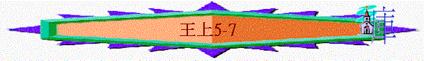

|
屬神國度的衰落 |
|||
|
二王—行神的旨意得堅固 |
二國—不專心順服終分裂 |
二先知—神能力彰顯仍剛硬 |
二結局—繼續行惡至終亡國 |
|
王上1-10 |
王上11-16 |
王上17-王下9:4 |
王下9:5-25:30 |
一.二王(王上1-10)
1.大衛王----神的旨意必成就(1:1-2:12)
2.所羅門----行神旨意得堅固(2:13-10:29)
A.行公義
B.建聖殿
∼所羅門登基後，沒忘記按神的旨意建聖殿，他也遵父的心意而行，神也悅納他們所作，賜福堅固他的國
a.智慧合適的預備
(1)預備材料
「希蘭聽見所羅門的話，就甚喜悅，說：「今日應當稱頌耶和華；因他賜給大衛一個有智慧的兒子，治理這眾多的民。」」5:7
「耶和華照著所應許的賜智慧給所羅門。希蘭與所羅門和好，彼此立約。」5:12
∼似乎5:7-12的重點是所羅門與希蘭王協議，求他賜木材，而當他與希蘭王提出，希蘭稱讚他是有智慧的人，明顯所羅門所說的說話及他的提出是充滿智慧
∼而真正的智慧是有知識加上能運用
∼所羅門的智慧在那��
(A)知道真神的心意
「我定意要為耶和華我神的名建殿，是照耶和華應許我父親大衛的話說：『我必使你兒子接續你坐你的位，他必為我的名建殿。』」王上5:5
「你壽數滿足歸你列祖的時候，我必使你的後裔接續你的位，我也必堅定他的國。他必為我建造殿宇；我必堅定他的國位直到永遠。」代上17:11-12
(B)認識工程的浩大
「我所要建造的殿宇甚大；因為我們的神至大，超乎諸神。」代下2:5
(C)認識自己的渺小
「天和天上的天，尚且不足他居住的，誰能為他建造殿宇呢？我是誰？能為他建造殿宇嗎？不過在他面前燒香而已。」代下2:6
∼他不會因自己是第一位能為神建殿的王而驕傲，反覺自己仍渺小
(D)尋找合適的幫助
「所以求你吩咐你的僕人在利巴嫩為我砍伐香柏木，我的僕人也必幫助他們，我必照你所定的，給你僕人的工價；因為你知道，在我們中間沒有人像西頓人善於砍伐樹木。」」王上5:6
∼他知道最好的一種材料是利巴嫩的香柏木，所以他尋找合適的國家—推羅，尋找合適的王—希蘭幫助他
(E)合宜智慧的請求
(a)用父親的情誼
「推羅王希蘭，平素愛大衛；他聽見以色列人膏所羅門，接續他父親作王，就差遣臣僕來見他。所羅門也差遣人去見希蘭，說：「你知道我父親大衛因四圍的爭戰，不能為耶和華他神的名建殿，直等到耶和華使仇敵都服在他腳下。」5:1-3
(b)用真神的心意
「我定意要為耶和華我神的名建殿，是照耶和華應許我父親大衛的話說：『我必使你兒子接續你坐你的位，他必為我的名建殿。』」5:5
(c)用合理的交易
「我的僕人必將這木料從利巴嫩運到海裡，紮成筏子，浮海運到你所指定我的地方，在那裡拆開，你就可以收取；你也要成全我的心願，將食物給我的家。」」5:9
「所羅門給希蘭麥子二萬歌珥，清油二十歌珥，作他家的食物。所羅門每年都是這樣給希蘭。」5:11
(2)預備工人
(A)有挑選
「所羅門王從以色列人中挑取服苦的人共有三萬，」5:13
(B)有輪班
「派他們輪流每月一萬人上利巴嫩去；一個月在利巴嫩，兩個月在家裡。
亞多尼蘭掌管他們。」5:14
(C)有監督
「派他們輪流每月一萬人上利巴嫩去；一個月在利巴嫩，兩個月在家裡。亞多尼蘭掌管他們。」5:14
「此外，所羅門用三千三百督工的，監管工人。」5:16
(D)有指令
「王下令，人就鑿出又大又寶貴的石頭來，用以立殿的根基。」王上5:17
b.按神旨意的建殿
(1)建聖殿
(A)時間
「以色列人出埃及地後四百八十年，所羅門作以色列王第四年西弗月，就是二月，開工建造耶和華的殿。」6:1
∼以色列人出埃及480年，也是他登基後第四年，應是主前966年
∼而出埃的日期則是主前1446年
∼西弗月是猶太人的二月，陽曆的4至5月間
(B)樣式
「大衛將殿的遊廊、旁屋、府庫、樓房、內殿，和施恩所的樣式指示他兒子所羅門，又將被靈感動所得的樣式，就是耶和華
神殿的院子、周圍的房屋、殿的府庫，和聖物府庫的一切樣式都指示他；」代上
28:11-12
「大衛說：「這一切工作的樣式都是耶和華用手劃出來使我明白的。」代上
28:19
∼殿的樣式是按神指示給大衛的樣式，不是照人的意思
(a)外殿
「殿前的廊子長二十肘，與殿的寬窄一樣，闊十肘；」6:3
「內殿前的外殿，長四十肘。」6:17
∼長40肘(1肘約
∼擺放桌子、金燈臺及香壇
(b)內殿
「內殿長二十肘，寬二十肘，高二十肘，牆面都貼上精金；又用香柏木做壇，包上精金。」6:20
∼長20肘X闊20肘X高20肘(比外殿矮10肘，可能因為擡高了地面之故)
∼即至聖所
∼有約櫃及口基口路口伯
(c)廊子
「所羅門王為耶和華所建的殿，長六十肘，寬二十肘，高三十肘。」6:2
「殿前的廊子長二十肘，與殿的寬窄一樣，高一百二十肘；裡面貼上精金。」代下3:4
∼長10肘X闊20肘X高30肘
∼在外殿前面
∼代下3:3題及高是120肘，可能是抄錯或殿有一個很高的塔
(d)窗櫺
「又為殿做了嚴緊的窗櫺。」6:4
∼可作窗格或天窗，靠着殿牆∼
(e)旁屋
「靠著殿牆，圍著外殿內殿，造了三層旁屋；」6:5
「在殿右邊當中的旁屋有門，門內有旋螺的樓梯，可以上到第二層，從第二層可以上到第三層。」6:8
∼在殿的旁邊，共分三層，各層較上層的狹窄，因下層的牆壁較厚突出之處用以支持橫梁，避免梁木插入聖殿的牆
(C)核心
「耶和華的話臨到所羅門說：「論到你所建的這殿，你若遵行我的律例，謹守我的典章，遵從我的一切誡命，我必向你應驗我所應許你父親大衛的話。我必住在以色列人中間，並不丟棄我民以色列。」」6:11-13
∼聖殿的樣式是重要的，但若聖殿被建造，沒有神在中間，沒有神的垂顧，也是枉然的
∼而得神同住，得神不丟棄的關鍵是人遵行神的律例，謹守祂的典章
(D)材料
(a)石頭
「建殿是用山中鑿成的石頭。建殿的時候，鎚子、斧子，和別樣鐵器的響聲都沒有聽見。」6:7
「他又用鑿成的石頭三層、香柏木一層建築內院。」6:36
「在那裡要為耶和華你的神築一座石壇；在石頭上不可動鐵器。」申27:5
∼用山中鑿成的石頭建殿，石建殿時，不能有鐵器聲音，可能代表聖殿是神聖安靜的地方，不容因有鐵器而發出的雜聲影響殿的安寧
∼是堅硬的
(b)香栢木
「所羅門建造殿宇。殿裡面用香柏木板貼牆，從地到棚頂都用木板遮蔽，又用松木板鋪地。內殿，就是至聖所，長二十肘，從地到棚頂用香柏木板遮蔽（或作：隔斷）。內殿前的外殿，長四十肘。殿裡一點石頭都不顯露，一概用香柏木遮蔽；上面刻著野瓜和初開的花。」6:14-18
「內殿長二十肘，寬二十肘，高二十肘，牆面都貼上精金；又用香柏木做壇，包上精金。」6:20
∼殿由石頭組成，但牆與頂包著香栢木，令石頭不顯露
∼又用香栢木造香壇
∼黎巴嫩的香柏樹是極高大及佳美的，香柏木是堅硬、馨香、防腐
(c)松木
「殿裡面用香柏木板貼牆，從地到棚頂都用木板遮蔽，又用松木板鋪地。」6:15
「用松木做門兩扇。這扇分兩扇，是摺疊的；那扇分兩扇；也是摺疊的。」6:34
∼地面是用松木板舖，外殿的門扇也是松木造的
∼松木木質較軟，木紋自然清晰美觀
(d)橄欖木
「他用橄欖木做兩個基路伯，各高十肘，安在內殿。這一個基路伯有兩個翅膀，各長五肘，從這翅膀尖到那翅膀尖共有十肘；那一個基路伯的兩個翅膀也是十肘，兩個基路伯的尺寸、形像都是一樣。這基路伯高十肘，那基路伯也是如此。」6:23-26
「又用橄欖木製造內殿的門扇、門楣、門框；門口有牆的五分之一。」6:31
「用松木做門兩扇。這扇分兩扇，是摺疊的；那扇分兩扇；也是摺疊的。」6:34
∼二基路伯：在內殿，兩翅膀各長五肘
∼外殿的門框、門口及內殿門扇、門楣、門框、門口由橄欖木製造
∼橄欖木較輕
(e)精金
「內殿長二十肘，寬二十肘，高二十肘，牆面都貼上精金；又用香柏木做壇，包上精金。」6:20
「全殿都貼上金子，直到貼完；內殿前的壇，也都用金包裹。」6:22
「又用金子包裹二基路伯。」6:28
「上面刻著基路伯、棕樹，和初開的花，都用金子貼了。」6:35
「內殿、外殿的地板都貼上金子。」6:30
∼全殿都貼上金子，香壇也包上精金
∼兩基路伯、地板及門都貼上金子
∼精金代表榮美及尊貴
(E)裝飾
(a)殿牆
「殿裡預備了內殿，好安放耶和華的約櫃。」6:19
「內殿、外殿周圍的牆上都刻著基路伯、棕樹，和初開的花。」6:29
∼殿的牆身刻上野瓜、初開的花、基路伯、棕樹
(b)門
「所羅門用精金貼了殿內的牆，又用金鍊子掛在內殿前門扇，用金包裹。」6:21
「在橄欖木做的兩門扇上刻著基路伯、棕樹，和初開的花，都貼上金子。」6:32
∼有金鍊子掛在內殿的前門
∼門也刻著基路伯、棕樹、初開的花
(F)時間
「所羅門在位第四年西弗月，立了耶和華殿的根基。到十一年布勒月，就是八月，殿和一切屬殿的都按著樣式造成。他建殿的工夫共有七年。」6:37-38
∼亞弗月：猶太的二月(陽曆4-5月)
∼布勒月：迦南人的八月(陽曆10、11月)
∼所羅門用了七年時間建殿
∼而所羅門是按著樣式造殿，這樣式是根據大衛從神所得的啟示而成的
(2)建王宮
「所羅門為自己建造宮室，十三年方才造成；」7:1
∼所羅門王為自己建造宮室，需時十三年
(A)利巴嫩林宮
「又建造利巴嫩林宮，長一百肘，寬五十肘，高三十肘，有香柏木柱三（原文作四）行，柱上有香柏木柁梁。其上以香柏木為蓋，每行柱子十五根，共有四十五根。」7:2-3
「又用錘出來的金子打成盾牌三百面，每面用金子三彌那，都放在利巴嫩林宮裡。」10:17
「他去掉猶大的遮蓋。那日，你就仰望林庫內的軍器。」賽22:8
∼可能用利巴嫩的香栢木造成，所以稱為林宮
∼林宮部份用來儲藏軍械；「柁」梁為有裝飾的橫梁∼
(B)廊子
「並建造有柱子的廊子，長五十肘，寬三十肘；在這廊前又有廊子，廊外有柱子和臺階。」7:6
∼又造一柱廊，可能附在林宮旁邊
(C)審判的廊子
「又建造一廊，其中設立審判的座位，這廊從地到頂都用香柏木遮蔽。」7:7
∼作審判之用
(D)王的宮室與法老女兒住所
「在殿右邊當中的旁屋有門，門內有旋螺的樓梯，可以上到第二層，從第二層可以上到第三層。」6:8
(E)大院
「大院周圍有鑿成的石頭三層、香柏木一層，都照耶和華殿的內院和殿廊的樣式。」7:12
∼圍著聖殿和各宮室的院子，包括聖殿的內院
(3)建造銅器
「所羅門王差遣人往推羅去，將戶蘭召了來。他是拿弗他利支派中一個寡婦的兒子，他父親是推羅人，作銅匠的。戶蘭滿有智慧、聰明、技能，善於各樣銅作。他來到所羅門王那裡，做王一切所要做的。」7:13-14
∼所羅門用戶蘭為他作以下的銅器，而這些器皿是大衛沒有指示的，而是他們構思的
(A)銅柱
「他製造兩根銅柱，每根高十八肘，圍十二肘；又用銅鑄了兩個柱頂安在柱上，各高五肘。柱頂上有裝修的網子和擰成的鍊索，每頂七個。網子周圍有兩行石榴遮蓋柱頂，兩個柱頂都是如此。」7:15-18
「他將兩根柱子立在殿廊前頭：右邊立一根，起名叫雅斤；左邊立一根，起名叫波阿斯。在柱頂上刻著百合花。這樣，造柱子的工就完畢了。」7:21-22
∼立在殿廊前，高18肘，加上鑄花飾柱頂
∼右邊名雅斤：神必堅立
∼左邊名波阿斯：力量在他�堶�
∼可能表神必堅立以色列的國度，聖殿也是祂堅立的，而人在殿�奡M求神可得力量
(B)銅海
「他又鑄一個銅海，樣式是圓的，高五肘，徑十肘，圍三十肘。在海邊之下，周圍有野瓜的樣式；每肘十瓜，共有兩行，是鑄海的時候鑄上的。
有十二隻銅牛馱海：三隻向北，三隻向西，三隻向南，三隻向東；海在牛上，牛尾都向內。」7:23-25
∼人工貯水池，供祭司潔身之用
∼放在殿的內院，周圍有銅鑄野瓜為裝飾
∼也有十二隻銅牛馱住銅海，可能代表以色列十二支派
∼可容二千罷特(每罷特約
(C)銅座及銅盆
「他用銅製造十個盆座，每座長四肘，寬四肘，高三肘。座的造法是這樣：四面都有心子，心子在邊子當中，心子上有獅子和牛，並基路伯；邊上有小座，獅子和牛以下有垂下的瓔珞。每盆座有四個銅輪和銅軸。小座的四角上在盆以下，有鑄成的盆架，其旁都有瓔珞。」7:27-30
「又用銅製造十個盆，每盆可容四十罷特。盆徑四肘，在那十座上，每座安設一盆。」7:38
∼盆子等於會幕時代的洗濯盆，用作清潔之用
∼用銅造十個盆及座，每座有四銅輪
∼「瓔珞」--珠玉穿成的頸項裝飾物
(4)造聖物
「所羅門又造耶和華殿裡的金壇和陳設餅的金桌子；內殿前的精金燈臺：右邊五個，左邊五個，並其上的金花、燈盞、蠟剪，與精金的杯、盤、鑷子、調羹、火鼎，以及至聖所、內殿的門樞，和外殿的門樞。」7:48-50
∼所羅門又選殿內的金壇、桌子、10個金燈臺、杯、盤、鑷子、調羮、火鼎等聖物
∼「鑷子」乃蠟剪，「調羮、火鼎」乃祭司用的兩種香爐
∼門樞原文指門的鉸鏈
(5)作成工
「所羅門王做完了耶和華殿的一切工，就把他父大衛分別為聖的金銀和器皿都帶來放在耶和華殿的府庫裡。」7:51
附錄：建殿所表達的真理
1.要有穩妥的根基
「所羅門在位第四年西弗月，立了耶和華殿的根基。」6:37
「倘若我耽延日久，你也可以知道在神的家中當怎樣行。這家就是永生神的教會，真理的柱石和根基。」提前3:15
∼昔日聖殿需要有根基，而教會的根基就是真理
2.要有最好的材料
「你們來到主面前，也就像活石，被建造成為靈宮，作聖潔的祭司，藉
著耶穌基督奉獻神所悅納的靈祭。」彼前2:5
∼昔日聖殿用精金、銅、松木、大石為合適及最好的材料
∼今日我們已是活石、成為主所用的、被建立成為靈宮，屬靈的家
3.要按照神的樣式
「大衛說：「這一切工作的樣式都是耶和華用手劃出來使我明白的。」代上
28:19
∼殿的樣式是按神指示給大衛的樣式，不是照人的意思
4.要遵行神的話語
「耶和華的話臨到所羅門說：「論到你所建的這殿，你若遵行我的律例，謹守我的典章，遵從我的一切誡命，我必向你應驗我所應許你父親大衛的話。我必住在以色列人中間，並不丟棄我民以色列。」」6:11-13
5.要顯出神的屬性
「惟有你們是被揀選的族類，是有君尊的祭司，是聖潔的國度，是屬神的子民，要叫你們宣揚那召你們出黑暗入奇妙光明者的美德。」彼前2:9
A.神的至高(殿甚高、柱子)
B.神的榮美(殿的華美)
C.神的能力(波阿斯的柱子)
6.更深一層的預表
A.預表基督
「主乃活石，固然是被人所棄的，卻是被神所揀選、所寶貴的。」彼前2:4
B.預表教會
「豈不知你們是神的殿，神的靈住在你們裡頭嗎？若有人毀壞神的殿，神必要毀壞那人；因為神的殿是聖的，這殿就是你們。」林前3:16-17
C.預表天上悵幕
「不像我拉著他們祖宗的手，領他們出埃及的時候，與他們所立的約。因為他們不恆心守我的約，我也不理他們。這是主說的。」來8:9
D.預表聖徒身體
「豈不知你們的身子就是聖靈的殿嗎？這聖靈是從神而來，住在你們裡頭的；並且你們不是自己的人；」林前6:19